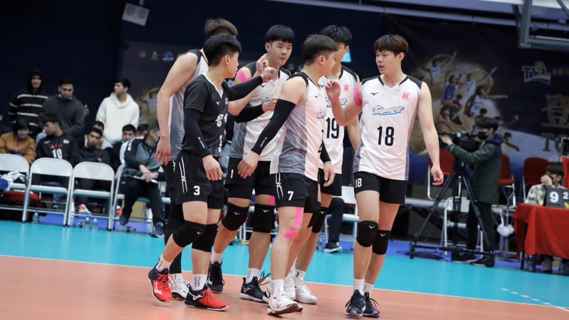

屏東台電男排
核心理念
台電男排LOGO結合希臘神話中最驍勇善戰的的無懼勇士，象徵台電男子排球隊在賽場上「無懼前進」的拼戰精神，勇士手持的閃電造型，代表球員們球技突出，也象徵在場上突破重圍，迎接勝利；同時肩負了深耕基層排球運動的使命，讓臺灣的排球實力能在國際逐漸嶄露頭角。
品牌故事
- 台電男子排球隊成立迄今已70年，參與並見證了台灣排壇的歷史，其精湛球技與輝煌的戰績，為國內首屈一指的隊伍，也是孕育國手的搖籃。歷屆入選國家代表隊，在國際賽場上爭取無數榮譽的台電球員不勝枚舉，如1998年，以台電球員為班底的中華男子排球隊，於曼谷亞運勇奪銅牌，2018年再度為臺灣奪回睽違20年亞運銅牌，其中5名球員均出自台電；2019年，亞洲U23男子排球錦標賽，中華隊拿下隊史首冠，擔任隊長的詹旻翰更在該場賽事榮膺最有價值球員、張育陞（現為旅日球員）則獲選為最佳副位攻擊手；2021年亞洲男子排球錦標賽，中華代表隊14名球員中，包含戴儒謙、顏振富、林宜暉、詹旻翰、蔡沛彰、劉鴻敏及自由球員李佳軒等均為台電男排球員，此次戰役中華隊表現亮眼，繼1997年後再次重返4強並獲得第4名，追平隊史最佳成績。而國內比賽的表現，台電男排更是屢戰屢勝，16屆的企業甲級排球聯賽，例行賽及挑戰賽共獲得了24座冠軍，也寫下7連霸的不敗紀錄。
- 台電男排隊不僅在賽場上表現優異，亦擔任公司節電大使，推廣節能減碳，同時每年辦理社會公益活動，例如：與台電女排共同舉辦台電盃排球賽，扎根基層排球運動；舉辦關懷列車，前進偏鄉關懷弱勢學童等。
- 今年台電男排隊首次和屏東縣政府聯名，以「屏東台電男子排球隊」之名參加企業17年排球聯賽，期望藉由與地方聯手，為屏東地區的排球運動發展注入更多能量。
